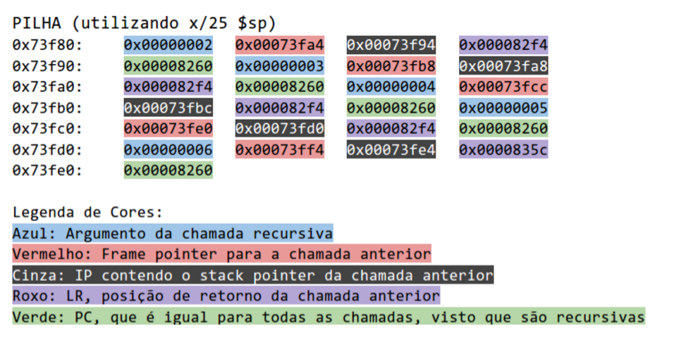

labmicro-19
Table of Contents
- . E1: Introducao a microprocessadores, com ênfase ao ARM.
- . E2: Programming Basics (cap2) + Data Processing Operations (cap3).
- PLANEJAMENTO:
- OBJETIVO:
- Fazer todos os exercícios do item 2.4 pagina 2-8 da apostila usando o gnuarm.
- Estude o capítulo 3 da apostila.
- Faca os exercicios 3.10.1 a 3.10.4 da pagina 3-11, 3-12. Seguem comentarios sobre cada exercicio.
- Envie o codigo fonte e possiveis comentarios dos exercicios no final da aula via email, subject: labmicro E2.
- Desempenho da classe:
- . E3: Data Processing Operations (cap3).
- . E4: Loads and Stores (cap4)
- . E5: Conditional Executiong Loops (cap5).
- . E6: Subroutines (cap6)
- . P1 - Subroutines (cap6)
- . E7: Memory Mapped Peripherals (cap7).
- . E8: C compiler + assembler - juntar C com assembly.
- - feriado (revolucao constitucionalista)
- . E9: Hello World for bare metal
- . E10: interrupcao de tempo no Versatile emulado.
- . E11: Chaveamento entre 2 processos.
- Prova 2
- Avaliacao:
- Referências:
Lab. Microprocessadohres PCS3732 - Curso Cooperativo prof. Jorge Kinoshita.
- quadrimestre 2018
Esse calendário contém as datas referentes das aulas para as turma de quinta-feira. no dia seguinte.
turma1: Terca 13:30-17:10H turma2: Quinta 13:30-17:10H
Aulas:
. E1: Introducao a microprocessadores, com ênfase ao ARM.
Explicar o curso, sequencia das aulas e avaliacao.
referência: ARM Laboratory Exercises, cap. 1
Ler o primeiro capítulo de 1. Fazer exercícios 1.7.1 e 1.7.2
gnuarm e código "hello world".
Faça com que o ARM imprima hello world de acordo com: http://linux-kernel-lab.blogspot.com.br/2018/04/basics-on-arm-processor.html Se tiver interesse, veja as referencias 3, 4, 5, 6. Ao rodar o gdb, veja os registradores:
(gdb) înfo registers (gdb) p $pc -> apresenta os $pc como numero decimal (gdb) p/x $r0 -> apresenta $r0 como numero hexadecimal (gdb) p/x $cpsr -> apresenta o $cpsr como numero hexadecimal.
Possiveis problemas ao seguir o post
- Problema de permissao ao rodar ./builddocker.sh
Este erro acontece nas maquinas do lab micro, mas nao costuma acontecer em seu computador pessoal. Para corrigir, na maquina do lab, faca:
~/gcc-arm$ sudo ./build_docker.sh
- Nao tem permissao para criar arquivo hello.c em src
Este erro acontece nas maquinas do lab micro, mas nao costuma acontecer em seu computador pessoal. Para corrigir, na maquina do lab, faca:
~/gcc-arm$ chmod 777 src
Usando o gnuarm, rode o programa da pagina 2-3 da apostila ARM Lab (item 2-2).
Observe que vc. deverá colocar o programa no formato GNU. Uma forma de fazer isso é observar o hello.s e fazer as modificacoes. Em caso de dúvidas sobre as diretivas, consulte os manuais em https://sourcery.mentor.com/sgpp/lite/arm/portal/release830; em particular consule o manual do GNU Assembler. A modificação já feita do codigo assembly do item 2-2 fica assim no gnumarm:
--------------------------------------------------- .text .globl main main: MOV r0, #15 MOV r1, #20 BL firstfunc MOV r0, #0x18 LDR r1, =0x20026 SWI 0x123456 firstfunc: ADD r0, r0, r1 MOV pc, lr --------------------------------------------------
Para isso vc. pode fazer:
gedit item-2-2.s e fazer o copy and paste.
Uma software interrupt
No código temos:
LDR r1, =0x20026 SWI 0x123456
que se refere a uma software interrupt pedindo um servico do monitor da placa evaluator7t. Como estamos rodando de forma simulada, essa software interrupt irá travar o gdb. Assim, nao rodem o SWI (basta colocar um breakpoint). Uma pergunta interessante é:
- qual a diferenca entre LDR e MOV? Observem que ambas as instrucoes carregaram valores imediatos nos registradores. A diferenca é que com LDR é possível carregar valores quaisquer de 32 bits enquanto que com o MOV não. Isso será importante para a questao 3.10.1
. E2: Programming Basics (cap2) + Data Processing Operations (cap3).
A apostila "ARM Laboratory Exercises" roda código feito para o codewarrior/freescale e não para o gnuarm. Portanto, ADAPTEM o código da apostila para rodar no gnuarm como feito na aula passada, exemplo do item 2-2 da apostila.
PLANEJAMENTO:
Para essa aula não é necessário planejamento.
OBJETIVO:
- capítulo 2 e parte do 3 da apostila, mas ao invés de usarmos o codewarrior para windows estaremos usando o gnuarm no linux ubuntu. cap2: todo o item 2.4: de 2.4.1 a 2.4.3
cap3: Faca de 3.10.1 ateh 3.10.4
Fazer todos os exercícios do item 2.4 pagina 2-8 da apostila usando o gnuarm.
Observacao sobre os exercicios As perguntas do item 2.4 se referem ao codewarrior (ambiente usado pela apostila no lugar do gnuarm); por isso pensem nas questoes referindo-se ao gnuarm.
2.4.1
No ambiente codewarrior existe um make. Durante o nosso curso, nao precisaremos do make uma vez que o proprio arm-elf-gcc dispara o assembler e o linker. Para ver o que foi gerado pelo arm-elf-gcc basta fazer:
$ ls -alt|more
Esse comando coloca no topo os arquivos recentemente modificados ou criados. Apenas relatem o que foi feito - uso do arm-elf-gcc, geracao do arquivo e arm-elf-gdb para rod√°-lo.
2.4.2
- step x next
A pergunta 2.4.2 pergunta sobre a diferenca entre step e stepin no codewarrior . Para o gdb, a pergunta se refere a: step: passo a passo entrando na rotina next: passo a passo mas sem entrar na rotina. Existe um problema GRAVE no uso do next. O arm-elf-gdb misteriosamente se perde ao ver um label como:
mov r0,1 label: move r0,2
Ao executar mov r0,1; o debugger nao pula para a instrucao seguinte usando next. Por isso, muito preferencialmente use 'step'.
- Problema ao executar SWI
A instrucao SWI 0x123456 eh uma interrupcao de software que roda no programa monitor que estah na flash da placa Evaluator-7T. Nós estamos simulando a execucao do codigo no gdb (target sim). O simulador nao possui o tratamento para essa interrupcao de software, por isso, coloque um breakpoint na linha onde estah a instrucao SWI (ex: linha 9) atraves de "b 9" e rode ateh lah. Dado que estamos sem monitor ou sistema operacional, estaremos sempre fazendo dessa forma: colocando um breakpoint no final do programa para observarmos se rodou ateh o final.
2.4.3
Se quisermos ver os registradores na tela do arm-elf-gdb usando C-x 2, teremos dois formatos hexa e decimal. Porém, é possível observar memória e registradores em outros formatos. Veja o manual do gdb - http://sourceware.org/gdb/download/onlinedocs/gdb/index.html Exemplos:
p/x $pc p/x $cpsr x/i $pc
Usando o help help x help p
Voce deve ter observado que x - serve para ver memoria externa.
x/d $r1
apresenta o conteudo de r1 em hexadecimal e o conteudo apontado por r1 na memoria em decimal.
p/d $r1
apresenta o conteudo de r1 em decimal.
Uma forma !!!PERIGOSA!!! de ver os bits do registrador de status eh:
p/t $cpsr
porem, os primeiros zeros serao OMITIDOS e voce pode estar vendo menos que 32 bits. Tome cuidado! Compare o cpsr com o comando "info registers". A forma segura eh:
p/x $cpsr
Estude o capítulo 3 da apostila.
pg 3-7:
ADD r0, r1, #0xc5, ROR 10 ver desenho na pagina 3-6.
1100 0101 para a direita em um registrador de 32 bits
depois de rodar 8 vezes temos
1100 0101 0000 Ö e depois de 10 vezes temos:
0011 0001 0100 Ö
o que fornece um o resultado da apostila:
31 40 00 00 0011 0001 0100 0000 0000 0000 0000 0000
Faca os exercicios 3.10.1 a 3.10.4 da pagina 3-11, 3-12. Seguem comentarios sobre cada exercicio.
3.10.1 - Signed and unsigned addition
Use LDR para carregar valores de 32 bits em registradores. Ao inves de fazer:
mov r1,#0x12345678
faça:
ldr r1,=0x12345678
- Cuidado com as flags
ADD nao atualiza as flags do CPSR; ADDS atualiza as flags do CPSR. Igualmente SUB x SUBS, MOV x MOVS, etc.
- Carry x overflow
Se representarmos numeros em 4 bits em complemento de 2, podemos representar desde o -8 ateh o 7. Ao somarmos -1 e 1 temos carry mas nao temos overflow. Somando 5+4, temos que 9>7 e portanto temos o overflow.
- signed x unsigned
Na apostila: Does their meaning change when the data values are unsigned numbers? Numa representacao de 4 bits unsigned, os numeros variam de 0 a 15. Assim, ao somarmos 7+2, obtemos 9 que pode ser representado como unsigned e nao pode ser representado em 4 bits unsigned. Assim, OVERFLOW para unsigned deve ser visto olhando a flag CARRY e a OVERFLOW em si, deixa de ter sentido.
3.10.2 - Multiplicacao de numeros
- no resultado tivemos a flag N setada, embora multiplicamos dois numeros negativos (e o resultado deveria ser positivo). A instrucao MULS, multiplica 2 numeros de 32 bits e coloca o resultado em um numero de 32 bits. Isso nao funciona bem. Vamos pensar em numeros de 4 bits variando de -8 a 7 em complemento de 2. Se multiplicarmos -1 e -8 em complemento de 2, temos +8. Porem, 8 nao pode ser representado em complemento de 2, 4 bits. A apostila quer mostrar que as flags foram atualizadas erradas nessa instrucao. Na verdade, nem as flags e nem o conteudo dos registradores eh confiavel dado que nao se consegue sempre multiplicar 2 numeros de 32 bits e colocar o resultado em 32 bits. O certo eh colocar o resultado em um numero de 64 bits. Para entender melhor veja no site da ARM, a especificacao da instrucao MUL: http://infocenter.arm.com/help/index.jsp?topic=/com.arm.doc.dui0068b/CIHIHGGJ.html . Se quisermos observar o bottom (32 bits menos significativos) em MULS contendo o numero todo, temos que multiplicar numeros que caibam em representacoes de 16 bits.
- Why is there a need for two separate long multiply instructions, UMULL and SMULL?
Ambas as instrucoes multiplicam 2 numeros de 32 bits e colocam o resultado de 64 bits em 2 registradores: um mais signficativo e outro menos significativo. O resultado eh diferente se o numero eh signed ou unsigned. Por exemplo: pensando em multiplicar 2 numeros de 4 bits, temos no caso de 1111 = 15(unsgined) ou (-1) signed. 15*15 eh um resultado totalmente diferente de (-1) * (-1). Daih a necessidade de UMULL e SMULL. Observe que se o resultado eh colocado em 2 registradores, como R0(mais signficativo) e R1; entao apenas o bit mais significativo de R0 eh quem diz se <R0,R1> eh positivo ou negativo.
- Pequeno erro:
Obs: Na apostila ARM Lab Manual temos na pg 3-5 UMULL r6, r8, r0, r1 ; {r6,r8} = r0 √ó r1 onde aparentemente r6 eh o mais significativo. Pelo site da ARM temos que o r6 (primeiro argumento) eh o menos significativo.
3.10.3 - Multiplicacao pelo numero 32.
- pense em algum shift.
- use MOV com deslocamento. Veja: http://infocenter.arm.com/help/index.jsp?topic=/com.arm.doc.dui0552a/BABHGAJI.html
Envie o codigo fonte e possiveis comentarios dos exercicios no final da aula via email, subject: labmicro E2.
Desempenho da classe:
algumas equipes nao conseguiram terminar todos os exercicios.
. E3: Data Processing Operations (cap3).
PLANEJAMENTO:
A - leiam o capitulo 3 da apostila.
B - Respondam as seguintes perguntas numa folha a m√£o (o professor far√° chamada oral antes da aula).
- 1. O que h√° de errado nas seguintes instrucoes:
a. ADD r3,r7, #1023 b. SUB r11, r12, r3, LSL #32
Sugestao:
- vejam os codigos de maquinas e observem que certos numeros nao servem para fazer o codigo de maquina.
- coloquem no gnuarm e vejam o erro.
- 2. Sem usar a instrucao MUL, de as seguintes instrucoes para multiplicar o registrador R4 por:
a. 132 b. 255 c. 18 d. 16384
Dicas (apenas para pensar em como resolver os itens a,b,d,e acima):
- como vc. faria para multiplicar um valor por 4? Dica: use o MOV com o deslocamento. r1 = 4*r0
- como vc. faria para multiplicar um valor por 5? Dica: use ADD com deslocamento - r1 = r0+4*r0
- como vc. faria para multiplicar um valor por 3? r1 = r0*4 - r0; veja a diferenca entre SUB e RSB
- como vc. faria para multiplicar um numero por 15? Multiplica por 3 e depois por 5.
- 3. Escreve uma rotina que compara 2 valores de 64-bits usando somente 2 instrucoes. (dica: a segunda instrucao é condicionalmente executada, baseada no resultado da primeira comparacao).
- 4. Escreva uma rotina que desloque um valor de 64-bits (armazenado em 2 registradores r0 e r1) de um bit para a direita.
- 5. idem 4, para a esquerda.
C - prepare a solucao de 3.10.7
- tragam numa folha (nao vale no computador), a solucao rascunhada a mão do exercicio de divisao 3.10.7; ou seja, como é o algoritmo da divisao. Nao eh para trazer todo o algoritmo em codigo ARM já implementado, mas se quiser coloque algumas partes em codigo ARM. A operacao de divisao deve ser feita com shift como faz a profa. do primário e nao o algoritmo ineficiente e simples que retira um numero do outro.
Veja: http://courses.cs.vt.edu/~cs1104/Division/ShiftSubtract/Shift.Subtract.html e coloque no papel a simulacao de 1101 dividido por 10.
OBJETIVO:
- terminar capítulo 3 da apostila. Fazer os exercicios de 3.10.5 ateh 3.10.8
DICAS e Observacoes:
3.10.5 -
nao percam tempo com a restricao da apostila: usem instrucoes condicionais para facilitar. No cap. 5 da apostila existe uma tabela com todas as condicoes possiveis. De preferencia, facam primeiro o exercicio 3.10.6 . Pequeno erro do UMULL na apostila explicado no item 3.10.2
3.10.6
Uma dica para se ter o absoluto de um numero eh fazer (zero - numero) caso o numero seja negativo.
3.10.7 Division
o arm-elf-gcc nao estah compilando uma instrucao que lide com RRX como mov Ö RRX porem compila outras como mov Ö ROR
Teste que deve funcionar:
- 1234567 por 1234
Teste que talvez falhe:
- 123456789 por 1234
Nao precisa de se preocupar caso esteja falhando para codigos onde o bit de sinal do dividendo seja 1.
3.10.8
- Erro1: Em: "The 2-bit Gray code occupies only bits [7:0] of r1, and the 3-bit Gray code occupies only bits [23:0] of r2."; deveriamos ter the 3-bit Gray code occupies only bits [15:0]
- Erro2 na apostila ARM Lab Manual: A sequencia b010 011 001 000 101 111 110 100 nao eh um codigo de gray de 3 bits (ex: erro ao passar de 000 para 101 alterando dois bits). O codigo pode ser
000 001 011 010 110 111 101 100. Se tiver duvidas em como se forma o codigo gray, consulte o wikipedia.
Envie o codigo fonte e possiveis comentarios dos exercicios no final da aula via email, subject: labmicro E3.
Desempenho da classe:
metade das equipes nao conseguiu implementar o 3.10.8 (mas vale a pena implementar?). O 3.10.8 poderia ser visto como um exercicio extra ou ainda eliminado.
. E4: Loads and Stores (cap4)
PLANEJAMENTO:
A Leia o capitulo 4.
B Respondam as questoes em uma folha √ m√£o:
B.1) Descreva o conteúdo do registrador R13 ou sp depois que as seguintes instruções forem executadas, assumindo que a memória contenha os valores mostrados abaixo. O registrador R0 contém 0x24, e o sistema de memória é little-endian (o menos significativo é colocado no endereco mais baixo).
| Endereço | Conteúdo |
| 0x24 | 0x06 |
| 0x25 | 0xFC |
| 0x26 | 0x03 |
| 0x27 | 0xFF |
LDRSB sp, [r0] LDRSH sp, [r0] LDR sp,[r0] LDRB sp,[r0]
B.2) Indique se as seguintes instruções usam o modo pré ou pós indexado de endereçamento:
STR r6, [r4,#4] LDR r3, [r12], #6 LDRB r4, [r3,r2]! LDRSH r12, [r6]
B.3) Calcule o endereço efetivo das seguintes instruções se o registrador r3 = 0x4000 e o registrador r4 = 0x20
STRB r9, [r3,r4] LDRB r8,[r3,r4,LSL #3] LDR r7, [r3], r4 STRB r6, [r3], r4, ASR #2
B.4) O que há de errado na seguinte instrução? Veja "incorrect example" em: http://infocenter.arm.com/help/index.jsp?topic=/com.arm.doc.dui0068b/Chdbifed.html
LDRSB r1,[r6],r3,LSL #4
C - rascunhe a solucao
Cada equipe deve trazer numa folha de papel a resposta em letra de mao (nada de coisa impressa) para a seguinte pergunta. Escreva o código em Assembly que faça:
for (i=0; i<8; i++) {
a[i] = b[7-i];
}
Vai ter mais nota quem colocar o programa mais proximo da realidade; ou seja, evitem usar pseudo instrucoes. Para observar um codigo bem proximo da realidade, sugiro instalar o gnuarm na maquina de voces e testar. Procurem usar as seguintes instrucoes em seu código: LDR ou ADR (isto é: declarem os dados na memória e leiam de lá; por exemplo, onde comeca o a array b e a array a). BGE (usem instrucoes que facam o desvio condicional, nao necessariamente BGE). RSB (para o 7-i) STR (isto é: armazene de fato o dado na memória).
OBJETIVO:
Fazer os exercicios do capitulo 4.
Observacoes
Na apostila tem um erro no item:
4.3.1 Direct loading with MOV and MVN
MOV r0, #0x1, 30 ; r0 = 1020 32 - 30 = 2; 2 ** 2 = 4 portanto pula de 4 em 4. MOV r0, #0xFF, 28 ; r0 = 4080 32 - 28 = 4; 2 ** 4 = 16 portanto pula de 16 em 16. MOV r0, #0x1, 26 ; r0 = 4096 32 - 26 = 6; 2 ** 6 = 64 portanto pula de 64 em 64.
mas na realidade eh:
│0x8218 <main> mov r0, #4 1 *4 = 4 │ │0x821c <main+4> mov r0, #4080 255 * 16 = 4080 │ │0x8220 <main+8> mov r0, #64 ; 0x40 1 * 64 = 64.
Comentários sobre os exercícios:
- 4.5.1
Assignments with operands in memory Assume an array of 25 words. A compiler associates variables x and y with registers r0 and r1, respectively. Assume that the base address for the array is located in r2. Translate this C statement/assignment using the post-indexed form:
x = array[5] + y
Now try writing it using the pre-indexed form. Apenas crie um programa em assembly que use o LDR de forma pre indexada e pos indexada. Force para que os valores nos registradores caiam na posicao array + 5*4 (array de 4 bytes para cada elemento) em ambos os caso.
Uma forma simples de se declarar dados, por exemplo, uma array, estah em http://www.coranac.com/tonc/text/asm.htm :
mov r2, #1 @ Byte loads adr r0, bytes ldrb r3, bytes @ r3= bytes[0]; // r3= 0x000000FF= 255 ldrsb r3, bytes @ r3= (s8)bytes[0]; // r3= 0xFFFFFFFF= -1 ldrb r3, [r0], r2 @ r3= *r0_b++; // r3= 255, r0++; @ Halfword loads adr r0, hwords ldrh r3, hwords+2 @ r3= words[1]; // r3= 0x0000FFFF= 65535 ldrsh r3, [r0, #2] @ r3= (s16)r0_h[1]; // r3= 0xFFFFFFFF= -1 ldrh r3, [r0, r2, lsl #1] @ r3= r0_h[1]? No! Illegal instruction :( @ Byte array: u8 bytes[3]= { 0xFF, 1, 2 }; bytes: .byte 0xFF, 1, 2 @ Halfword array u16 hwords[3]= { 0xF001, 0xFFFF, 0xF112 }; .align 1 @ align to even bytes REQUIRED!!! hwords: .hword 0xF110, 0xFFFF, 0xF112Para observar os dados na memória dentro do gdb, voce pode fazer
x/20 0x100
para ver 20 words a partir de 0x100
x/21h hwords // hwords eh o label no codigo acima
para ver 21 half words a partir do label hwords.
x/20db array // hwords eh o label no codigo acima
para ver 20 bytes em formato decimal a partir do label array
Terminando este item pule para o 4.5.2, lembrando que mais referencias estao em: http://www.coranac.com/tonc/text/asm.htm : pagina mostrando diversos codigos e dados para o gnu assembler
http://www.microcross.com/gnu-arm7t-microcross.pdf http://bel.gsi.de/scripts/gnu-arm-assy-quick-ref.pdf
e os manuais do GNU est√£o (por exemplo) em: https://sourcery.mentor.com/sgpp/lite/arm/portal/release830
- 4.5.2
Translate this C statement/assignment using the post-indexed form:
array[10] = array[5] + y
Now try it using the pre-indexed form.
Pergunta: qual o significado de se ter pre-indexado ou pos-indexado nesse caso? Resposta: o objetivo é apenas didático. Não tem significado. O uso do pre-indexado ou pos-indexado faz sentido dentro de um loop.
- 4.5.4
Declare os elementos na memoria usando .byte e use o label ao inves de posicoes fixas como 0x4000, 0x4001, etc.
Suponha que ao inves de b) initPointers (int *a, esteja escrito b) initPointers (int *array,
- 4.5.5, 4.5.6 sao muito parecidos.
A diferenca eh que 4.5.6 nao pede para calcular a sequencia na memoria, podendo simplesmente usar registradores para isso. Nao existe de fato muita diferenca. Alguns alunos questionaram se 4.5.6 deveria calcula f(n) para qualquer n inteiro. O primeiro problema eh que o resultado deveria caber na memória do computador e portanto n sempre terah que ser limitado: nao eh isso que vamos fazer. Assuma n limitado para resultados cabendo em byte (4.5.5) ou word (4.5.6).
Envie o codigo fonte e possiveis comentarios dos exercicios no final da aula via email, subject: labmicro E4.
. E5: Conditional Executiong Loops (cap5).
PLANEJAMENTO
A. Leia o Capitulo 5
B. Responda em uma folha de papel aa mao para entregar ao professor no comeco da aula - serve de base para a chamada oral individual.
- 1. Traduza as seguintes instrucoes em uma unica instrucao ARM:
- a. adicione resgistradores r3 e r6 somente se N = 0 (N estah "clear"). Armazene o resultado no registrador r7.
- b. adicione resgistradores r3 e r6 somente se N = 1. Armazene o resultado no registrador r7.
- c. Multiplique os registradores r7 e r12, colocando os resulados no registrador r3 somente se C estah setado (C = 1) e Z = 0 (apostila estah com erro, ver http://infocenter.arm.com/help/index.jsp?topic=/com.arm.doc.den0024a/CHDEEABE.html).
- d. Multiplique os registradores r7 e r12, colocando os resulados no registrador r3 somente se C clear ou Z set .
- e. Compare os registradores r6 e r8 somente se Z estah zerado.
- f. Compare os registradores r6 e r8 somente se Z set ou N ‚â V
- Observe a seguinte funcao em C:
int foo(int x, int y) { if ((x + y) >= 0) return 0; else return 1; }Suponha que ela tenha sido compilada e traduzida no seguinte codigo:
foo ADDS r0,r0,r1 BPL PosOrZ done MOV r0, #0 MOV pc, lr PosOrZ MOV r0,#1 B doneO compilador gerou o código corretamente? O compilador retorna 0 ou 1 em r0. Se não está bom o código, corrija. Altere o código para que ele execute a funcao em somente 4 instrucoes (dica: use execucao condicional).
- a. adicione resgistradores r3 e r6 somente se N = 0 (N estah "clear"). Armazene o resultado no registrador r7.
C. IMPORTANTE: Fazer o rascunho de 5.5.4 em folha de papel rascunhado a mão; por exemplo, faça o diagrama de estados.
5.5.4 Finite state machines: a nonresetting sequence recognizer
- 1. Consider an FSM with one input X and one output Z. The FSM asserts its output Z when it recognizes an input bit sequence of b1011. The machine keeps checking for the sequence and does not reset when it recognizes the sequence. Here is an example input string X and its output Z:
X = ...0010110110... Z = ...0000010010...
Write ARM assembly to implement the sequence recognizer. Start with the initial input X in r1. Finish with the output Z in r2 at the end of the program.
- 2. Now write the code to recognize any sequence Y up to 32 bits. Start with the recognizing sequence Y in r8 and the size of Y in r9. For example, to recognize the sequence Y = b0110110, then r8 = 0x36 and r9 = 0x7 before program execution. Everything else should be the same is in Step 1. Make sure that your program works for every case, including the case when r9 = 1 or r9 = 32.
Uma idéia é fazer o item 2 e usá-lo para resolver o item 1.
Objetivo
Fazer os exercicios do capitulo 5 da apostila em 5.5
Observacoes
5.5.2
Se vc. considerar que nao eh necessario usar MOVNE, delete essa instrucao do codigo sugerido. (mas talvez precise sim - um registrador nao pode ser origem e destino na multiplicacao).
5.5.3
- Find maximum value
In this exercise, you are to find the largest integer in a series of 32-bit unsigned integers. The length of the series is determined by the value in register r5. The maximum value is stored in the memory location 0x5000 at the end of the routine. The data values begin at memory location 0x5006. Choose 11 or more integers to use. Use as much conditional execution as possible when writing the code. Demonstrate the program to your lab instructor and print out the memory space starting at 0x5000 before and after the program runs. Be sure to include enough memory space to show all of your 32-bit integer values.
0x5006 não é múltiplo de 4 - as words devem estar alinhadas em múltiplos de 4. Apenas declare as words (valor maximo e sequencia de words) em seu codigo e deixe que o gnuarm escolha suas posicoes.
- Obs: A apostila foi escrita para o codewarrior e estamos usando o gnuarm e nesse ambiente é razoavelmente simples definir toda uma área de dados em uma certa posição de memória (no ldscript), mas não é simples definir que dados sejam alocados em um endereço específico - para isso podemos usar ponteiros para a posição fixa.
Nesse laboratório, ao invés de usar 0x5000, defina uma área de dados de 100 bytes assim:
dados: .space 100
e no programa podemos fazer, por exemplo:
LDR r0,=dados+4
e dessa forma não dependemos da posição fixa 0x5000 Caso queira dados jah pre-inicializados faca:
dados: .word 0x1, 0x2 ...
- Obs: A apostila foi escrita para o codewarrior e estamos usando o gnuarm e nesse ambiente é razoavelmente simples definir toda uma área de dados em uma certa posição de memória (no ldscript), mas não é simples definir que dados sejam alocados em um endereço específico - para isso podemos usar ponteiros para a posição fixa.
5.5.4
se quiser, declare um numero binario como: 0b10101 dentro do codigo.
Envie o codigo fonte e possiveis comentarios dos exercicios no final da aula via email, subject: labmicro E5.
. E6: Subroutines (cap6)
PLANEJAMENTO
A. Ler cap 6.
B. Responda (rascunho no papel)
1 O que há de errado com as seguintes instruções:
a) STMIA r5!, {r5, r4, r9}
b) LDMDA r2, {}
STMDB r15!, [r0-r3, r4, lr}
2 Se o registrador r6 possui 0x8000 (como ponteiro para a memória); após executar
LDMIA r6,{r7,r4,r0,lr}
o que fica em r0, r4, r7 e em lr?
3 Assuma que a memória e registradores estejam:
| 0x8010 | 0x1 |
| 0x800C | 0xfeeddeaf |
| 0x8008 | 0x00008888 |
| 0x8004 | 0x12340000 |
| 0x8000 | 0xbabe0000 |
r0=0x13; r10xffffffff; r2 = 0xeeeeeeee; r3 0x8000
Descreva a memória e conteúdos dos registradores após a instrução:
LDMIA r3!, {r0,r1,r2}
4 Suponha que a pilha esteja como o diagrama abaixo. Que instrução seria necessária para sair do estado original e ir para o estado a), depois b) e depois c)?
| Endereço | Original | A | B | C |
| 0x8010 | 0x1 | 0x1 | 0x1 | 0x1 |
| 0x800C | 0xfeeddeaf | 0xfeeddeaf | 0xfeeddeaf | 0xfeeddeaf |
| 0x8008 | 0xbabe2222 | 0xbabe22222 | ||
| 0x8004 | 0x12340000 | |||
| 0x8000 |
C. IMPORTANTE
Voce pode escolher entre:
- apresentar o codigo rodando no seu PRÓPRIO computador no comeco de aula
- ou rascunho no papel.
6.5.2 Bubble sorting 6.5.3 Magic Squares
OBJETIVO
Exercicios 6.5 do 6.5.1 ateh 6.5.4; o resto serah feito na proxima aula.
Observacoes
6.5.1 transmit the arguments by way of the stack with two subroutines, func1 and func2, that demonstrate stack functionality. É importante que o endereco de retorno seja colocado na pilha em func1. Declare os elementos na memoria usando .word (veja acima) e use o label ao inves de posicoes fixas como 0x4000, 0x4001, etc.
6.5.2 Bubble Sort 6.5.2.1. Usem load e store multiplo envolvendo 2 posicoes consecutivas de memoria quando fizerem a "bolha" andar. Embora no exercicio da apostila esteja como byte, usar word porque LDMÖ usa word.
6.5.2.2. Modify your code to utilize a full descending stack. Sorting must be done on the stack only. Once the stack is sorted, store the sorted stack back to the original array of memory locations starting at 0x4001.
The algorithm for the bubble sort is as follows: a. Compare adjacent elements. If the first element is greater than the second, swap them.
b. Do this for each pair of adjacent elements, starting with the first two and ending with the last two. At this point the last element should be the greatest. c. Repeat the steps for all elements except the last one. d. Repeat this process for one fewer element each time, until you have no more pairs to compare.
Dado que eh muito confuso, nao estarei cobrando esse uso de pilha. Podem pular esse item 6.5.2.-2. Entretanto, seguem observacoes colhidas ao longo do curso. Porem, pulem esse item:
Está confuso como utilizar o full descending stack - uma forma de organizar usando pilha somente é torre de Hannoy mas usando o bubble sort estamos mexendo em elmentos de uma array. Uma idéia é: trabalha com duas estruturas - uma array onde se descobre o maior e a pilha que vai armazenando o maior elemento em cada iteracao. Observar que a array eh de bytes enquanto que a pilha eh de words (o mais simples eh desperdicar memoria ao usar os bytes como words). Outra idéia (grupo Joao) - usar duas pilhas. A pilha eh varrida a cada comparacao jogando o maior valor para a segunda pilha. Na primeira pilha sobre o menor valor. A segunda pilha com N-1 elementos é totalmente trasportada para a primeira pilha. O processo se repete para os N-1 elementos da primeira pilha.
6.5.3 Quadrado Magico Nao √© necess√°rio preocupar-se em colocar o quadrado m√°gico em 0x4000. √â mais f√°cil declarar na mem√≥ria ao final do programa algo como .word 1,4, Ö colocando as words do quadrado m√°gico.
6.5.4 More stacks Write ARM assembly to implement a push operation without the use of load/store multiple instructions. Write the code to handle bytes, half-words, and words. Use r0 to indicate the data type. A value of 1 in r0 indicates that a byte is to be pushed, 2 indicates a half-word, and 4 indicates a word. Put the data to push in r1.
Lembrar que sp eh sempre um multiplo de 4. Tem que tomar um certo cuidado ao empilhar byte ou half word para que o sp permaneca multiplo de 4; ou seja, dependendo do caso a memoria eh desperdicada.
O mais facil eh sempre alocar 4 bytes mesmo que seja para um byte apenas, desperdicando memoria. Se quiser fazer dessa forma bem facil, faca.
O mais dificil eh ir alocando memoria dependendo do tipo de dado, economizando memoria. Para byte, empilha no topo da pilha sempre; para half word, empilha no endereco multiplo de 2 mais proximo do topo; para word, empilha no endereco multiplo de 4 mais proximo do topo da pilha. Nao eh necessario ir para essa solucao mais dificil pois ainda teriamos o problema de como desempilhar sem dar problemas.
Dica para olhar a pilha no gdb:
x/20 $sp
Envie o codigo fonte e possiveis comentarios dos exercicios no final da aula via email, subject: labmicro E6.
feriado (Corpus Christi)
. P1 - Subroutines (cap6)
PLANEJAMENTO
para a prova preparem um pendrive contendo tudo o que acharem necessario para desenvolverem programas para o ARM, desde programas de experiencias passadas, livro sobre o instruction set da ARM, manuais do gdb, etc.
Prova
A prova ocorrer√° na sala de laboratorio de sistemas digitais. Venham com seus laptops preparados (toolchain ou simulador instalado, codigos fonte para consulta, manuais, etc.).
Amostra de uma prova
dado um numero, identificar se ele é primo.
tempo de prova
2 horas.
. E7: Memory Mapped Peripherals (cap7).
PLANEJAMENTO:
A. Leitura, alem do capt 7 da aposlita, consulte as seguintes referencias para fazer o planejamento:
- http://www.pcs.usp.br/~jkinoshi/2014/UM_KS32C50100_REV1.PDF
UMKS32C50100REV1.PDF - Manual do KS32C50100 RISC MICROCONTROLLER que est√° na placa do evaluator7t
- http://www.pcs.usp.br/~jkinoshi/2014/dui0134_evaluator7t.pdf
dui0134evaluator7t.pdf - Manual da placa do evaluator 7t
B. Rascunho de codigo
como planejamento rascunhem a solucao de cada um dos exercicios abaixo trazendo isso em PAPEL (retirarei pontos caso nao seja em papel rascunhado - nao deve ser impresso).
Os exercicios abaixo devem ser feitos com um cuidado extra mostrando como o codigo assembly faz de fato a entrada e saida, passo a passo. Nao existe informacao suficiente na apostila e por isso estou passando em anexo o manual da placa duiÖpdf. Vejam o capitulo 3 - Programmer's reference do arquivo duiÖpdf que contem codigo em C para o acessos dos leds, display de 7 segmentos e dip switches. Para o planejamento serah importante observar esse codigo e transpor para o assembly do ARM. O documento UMKS Ö eh o data sheet do ARM produzido pela Samsung. Os enderecos dos registradores estao no item 7.4.1 do ARM Lab Manual.
Se tiverem duvidas, perguntem.
Dica: Voce farah algo da seguinte forma para lidar com registradores. Como eles estao mapeados em memoria, acessamos os registradores como se estivessemos acessando a memoria normal.
- Escrevendo 0xf0 no IOPMOD: ldr r0, =0x3ff5000 @ IOPMOD ldr r2, =0xf0 @ seta 1 nos bits [7:4] str r2, [r0] @ seta IOPMOD como output
7.5.1 - Escrita nos LEDS Displaying the hex digits in binary to the surface-mounted LEDs Write ARM assembly to flash the hex digits in binary form to the surface-mounted LEDs in ascending order. Now slightly modify the code to flash the digits in descending order. Make sure to use a delay so that the digits can be seen. The digits should not stop flashing.
Para o delay crie um loop onde o registrador R0 eh inicializado com 0xfffff e eh decrementado ateh zero.
7.5.3 - Escrita no display de 7 segmentos Displaying the contents of a memory location to the seven-segment display Write ARM assembly to inspect memory location 0x4000. If the location contains a decimal number in the range 0-15, display the contents in hex on the seven-segment LED display. As an example, if 0x4000 contains 14, display an E.
7.5.5 - Leitura dos dip switches Displaying the value of the DIP switches to the surface-mounted LEDs Write ARM assembly to inspect DIP1 to DIP4, which act like four binary digits. Display the contents in binary on the surface-mounted LEDs. See Figure 2-10 of Evaluator-7T User Guide for bit assignments
OBJETIVO
Faremos os exercicios 7.5.1 a 7.5.11 envolvendo entrada/saida. Apresentam ao professor o exercicio 7.5.11 funcionando.
Observacoes
- Conex√£o com a placa evaluator 7t
- ttyUSB0 -> ttyS0
No ubuntu 16.4 do laboratorio crie ttyS0 com a placa ligada. Para realizarmos a conexão com a placa, observe que no laboratório os computadores não possuem interface serial e sim uma interface USB/serial. O linux enxerga essa interface como o dispositivo /dev/ttyUSB0 Porém, o gnuarm 4.3 não enxerga /dev/ttyUSB0 e sim /dev/ttyS0. Criamos o script tty.sh para ligar /dev/ttyUSB0 a /dev/ttyS0; para isso primeiro ligue a placa e certifque-se de que o cabo serial está conectado. Em seguida, rode $ tty.sh aparecerá umas mensagens de erro:
-> nao foi possivel resolver Ö
, mas a ligacao estah correta. Se por acaso voces retirarem o cabo e o reconectarem, devem ter problema pois ttyUSB0 fica inativo e teremos ttyUSB1 no linux.
- tty.sh
O script tty.sh faz o seguinte:
sudo su cd /dev sudo rm ttyS0 sudo ln -s ttyUSB0 ttyS0
Altere as permissoes de ttyUSB0 para que todos possa acessar: _EXAMPLE sudo chmod 666 ttyUSB0 #+ENDEXAMPLE
Ao usar o arm-elf-gdb, faremos a conexao com a placa da seguinte forma:
This GDB was configured as "--host=i686-pc-linux-gnu --target=arm-elf"... (gdb) set remotebaud 57600 --> o default eh 9600 bps; se quiser, altere para 19200 38400 57600 ou 115200 caso deseje uma comuniacao mais veloz. (gdb) target rdi /dev/ttyS0 Angel Debug Monitor V1.31 (ARM, INC. Evaluator Release v1.01) Built for ARM7TDMI Serial, IRQ Built Sep 26 2000 Serial Rate: 9600 RDI_info: internal error, unimplemented message Connected to ARM RDI target.
Após conectar, nao esqueca do comando load. Use agora o arm-elf-gdb como em experiencias anteriores.
- tty.sh
- ttyUSB0 -> ttyS0
- docker
Rode o docker da seguinte forma:
docker run --device=/dev/ttyS0 --rm -ti -v "$PWD/src":/home/student/src epiceric/gcc-arm
- diretorios com espacos
Nao rode o arm-elf-gdb com diretorios com espacos em ~/src
- Continue x run
Apos o load, pode-se colocar breakpoints. Para rodar o codigo no kit, use c/continue e nao r/run.
- Shoud reset the target
Se após o comando target rdi /dev/ttyS0 a placa pedir para resetar o target, isso significa apertar o botao de reset 'sys' da placa evaluator7t.
- Problema ao usar o run - o gdb pergunta se quer reiniciar o programa.
Use continue ou c ao inves de run, para continuar a execucao. Ao invés de:
b main run
faça
b main c
onde c = continue.
- vc. jah conectou uma vez, mas nao consegue se conectar uma segunda vez.
Voce pode resolver isso de duas formas. mate o docker faca
docker ps # obtenha a imagem do docker rodando docker kill NIMAGEM # em NIGMAGEM passe o numero da imagem visto em docker ps.
- Problema no STR
As portas de entrada e saida possuem tamanhos fixos: byte, word. Nao eh possivel fazer um STR (word) em uma posicao onde a porta eh um byte. Para isso use STRB.
- Problema no LDR ou ADR em posicoes como 0x3000, 0x4000
Nao use posicoes fixas como 0x3000 pois a placa evaluator7t deve ter essa posicao em EPROM ou alocada para o programa monitor. Declare um vetor ao final do seu codigo, como em http://www.coranac.com/tonc/text/asm.htm:
mov r2, #1 @ Byte loads adr r0, bytes ldrb r3, bytes @ r3= bytes[0]; // r3= 0x000000FF= 255 ldrsb r3, bytes @ r3= (s8)bytes[0]; // r3= 0xFFFFFFFF= -1 ldrb r3, [r0], r2 @ r3= *r0_b++; // r3= 255, r0++; @ Halfword loads adr r0, hwords ldrh r3, hwords+2 @ r3= words[1]; // r3= 0x0000FFFF= 65535 ldrsh r3, [r0, #2] @ r3= (s16)r0_h[1]; // r3= 0xFFFFFFFF= -1 ldrh r3, [r0, r2, lsl #1] @ r3= r0_h[1]? No! Illegal instruction :( @ Byte array: u8 bytes[3]= { 0xFF, 1, 2 }; bytes: .byte 0xFF, 1, 2 @ Halfword array u16 hwords[3]= { 0xF001, 0xFFFF, 0xF112 }; .align 1 @ align to even bytes REQUIRED!!! hwords: .hword 0xF110, 0xFFFF, 0xF112 - 7.5.3, 7.5.4
Em 7.5.3 estah escrito para usar a posicao 0x4000 de memoria. Ao inves disso, declare o que for preciso de dados no codigo em assembly como na observacao imediatamente acima. Nao use a posicao 0x3000 - o evaluator7t deve estar usando tambem essa posicao - por exemplo, ao se comunicar com o arm-elf-gdb. Os valores escritos na memoria em 0x3000 serao alterados pela placa e nao pelo seu programa. Veja observacao acima.
A documentacao da placa estah errada para o display de 7 segmentos. Deveria ser algo como:
a_ g |_ |b e |_ |c d
- 7.5.6
The program must be stopped manually. Nao eh necessario que se pare o programa manualmente.
Envie o codigo fonte e possiveis comentarios dos exercicios no final da aula via email, subject: labmicro E7.
. E8: C compiler + assembler - juntar C com assembly.
PLANEJAMENTO:
Crie um programa em C (imprime.c) que faz uma contagem de 5 a 0 usando uma funcao recursiva do tipo:
main() {
imprime(5);
}
imprime(N) {
if (N<0) {
exit();
}
printf("numero = %d\n", N);
imprime(N-1);
}
Crie de fato o programa em C e compile em casa antes da aula. Faca o compilador gerar o código assembly imprime.s através de
arm-elf-gcc –S imprime.c
Estude o código e simule a pilha em uma folha de papel escrita a mão:
- Como a funcao imprime estah usando a pilha para fazer a chamada recursiva?
Apresente ao professor também o código imprime.c e imprime.s no comeco da aula na tela do computador (ou seja, pode ser de forma eletronica). Apresente a explicacao de como a pilha estah sendo usada (simule desenhando a pilha usando o fp, ip, sp) para fazer a chamada recursiva numa folha de papel escrita aa mao.
Referencias que podem ajudar:
http://www.cl.cam.ac.uk/~fms27/teaching/2001-02/arm-project/02-sort/apcs.txt
http://msdn.microsoft.com/en-us/library/ms253599(v=vs.80).aspx
http://stackoverflow.com/questions/15752188/arm-link-register-and-frame-pointer
Responda:
- como o valor N eh passado como parametro para imprime() em main? via registrador ou pilha?
- para que serve o frame pointer?
- como o valor N eh referenciado dentro de imprime.s (vindo do compilador)?
Objetivos da aula de hoje:
- compilar codigo assembly e codigo C e linkar ambos.
- alterar o codigo C inserindo assembly no meio do código C.
- observar como funciona a recursao e gerar um relatorio usando o libreoffice com os printscreens da tela do arm-elf-gdb.
RELATORIO: Excepcionalmente para a aula de hoje, ao inves de enviarem um texto por email, crie um documento usando o libreoffice ou o openoffice anexando os printscreens com uma explicacao do que ocorre ao seguirem os itens abaixo. Como diversas instrucoes alteram a pilha, vc. pode observar a pilha fazendo: x/16 $sp
Pedi para uma equipe em 2011 gerar uma apostila sobre isso: http://www.pcs.usp.br/~jkinoshi/2012/usandoC-ProjetoLabProc.pdf
Nessa apostila existe o código de sement.c e segment.h, mas voce pode acha-los em
http://www.pcs.usp.br/~jkinoshi/2014/segment.c
http://www.pcs.usp.br/~jkinoshi/2014/segment.h
Vamos seguir a experiencia observando os itens abaixo que fazem referencia aa apostila. A medida que seguirem os itens abaixo, preencham o relatorio para ser enviado no final da aula.
compilar codigo assembly e codigo C e linkar ambos.
- O professor passou segment.c, segment.h. Gere o arquivo segment.o e execute no kit. Veja que aparece um numero no display. Note que segment.c imprime o numero no main. Ver PASSO-1 da apostila.
A apostila foi feita para se rodar a experiencia na placa evaluator-7t
arm-elf-gcc segment.c –o segment.o
porém, para debugar voce precisa adicionar a opcao -g
arm-elf-gcc -g segment.c –o segment.o
- crie a funcao imprime em segment.c que recebe um numero e coloca esse numero no display. Para isso basta retirar do main a parte pertinente. Compile e teste. Ver PASSO-2 da apostila.
- crie o arquivo imprime.c com a funcao imprime gerada no item anterior. O codigo executavel eh gerado atraves de: arm-elf-gcc -g imprime.c segment.c -o segment.o; teste o codigo gerado. Ver PASSO-3 da apostila.
- compile imprime.c gerando seu objeto: arm-elf-gcc -S impime.c (gerando imprime.s). Refaca o codigo usando imprime.s + segment.c. Teste. Ver PASSO-4 da apostila.
No passo 4, existem duas formas de gerar o arquivo .elf para ser executado na placa:
a) O gcc faz tudo (monta e linka): arm-elf-gcc –g imprime.s segment.c –o segment.o
b) O gcc soh compila:
Para o segment.c e para o imprime.c fazer:
arm-elf-gcc -S segment.c arm-elf-as -o segment.o segment.s
E depois linkar o segment.o e imprime.o usando arm-elf-ld. Porém utilize a forma a) para evitar problemas com linkar com a biblioteca do ambiente (para uma funcao usada para chamar o main e para o printf).
alterar o codigo C inserindo assembly no meio do código C.
- Estude o codigo imprime.s.
Como o numero eh passado como parametro? Como o fp é usado para isso? Isso corresponde ao PASSO-5 da apostila, mas não é necessário fazer esse passo.
Em uma funcao, os registradores poderiam ser salvos e recuperados chamados assim:
BL myfunction myfunction ..... STMFD sp!, {r4-r10, lr}; guarda os registradores ..... ..... LDMFD sp!, {r4-r10, pc}; recupera os registradores; o retorno da funcao eh feito colocando lr em pc.Para entender melhor como funciona a chamada de rotinas, veja: http://infocenter.arm.com/help/topic/com.arm.doc.ihi0042d/IHI0042D_aapcs.pdf Responda: Quais sao os registradores atribuidos a: fp, ip, sp, lr?
Para que serve o fp? Responda.
Para que serve o ip? Resposta: Register r12 (IP) may be used by a linker as a scratch register between a routine and any subroutine it calls (for details, see ¬ß5.3.1.1, Use of IP by the linker). It can also be used within a routine to hold intermediate values between subroutine calls. Essa resposta eh extremamente confusa, mas eh o que estah escrito em aapcs.pdf. Em: https://stackoverflow.com/questions/16120123/arm-why-do-i-need-to-push-pop-two-registers-at-function-calls temos que a ARM quer o alinhamento de 8 bytes na memoria (para o ARM 64 bits) Isso explica o motivo de se ter um registrador scratch (r12, ip) colocado na pilha - porque do ponto de vista da recursao em si, nao faz sentidoÖ
- Agora que voce conhece imprime.s e imprime.c; altere imprime.c para se colocar codigo assembly dentro do codigo C usando o inline.
Ver PASSO-6 da apostila. Basicamente voce deve imprimir um numero em imprime.c usando a funcao printf. Depois, observe o imprime.s (gerado pelo compilador de imprime.c) e tire o miolo da funcao imprime em assembly e enxerte no codigo em C.
Observacao: O compilador gera lables com pontos na frente (ex: .L4). Apenas o compilador deve fazer isso. O código a ser inserido inline não deve ter labels comecando por ponto (ex: L4). Isso evita que o compilador e o usuário criem e usem labels iguais.
Quando em C, declaramos:
printf("%d", numero);O ponteiro para a string "%d" eh passado como parametro para a funcao printf em r0 e numero eh passado em r1. Esse ponteiro eh passado pelo endereco da label .L(numero) e portanto voce nao tem acesso a ele. A fim de ver o ponteiro para string ao misturar C com o assembly declare como variavel global (para facilitar o seu entendimento do codigo gerado):
char *str = "%d";
e passe o ponteiro para "%d" em r0. Tome cuidado ao fazer isso.
Se ainda tiver duvidas, veja o assembly de:
printf(str, numero);
Se voce quiser observar o codigo gerado pelo C rodando como assembly, gere o assembly imprime.s (vindo do imprime.c usando a opcao -S do arm-elf-gcc) e depois faca:
arm-elf-gcc –g imprime.s segment.c –o segment.o
e debugue segment.o dentro do arm-elf-gdb.
observar como funciona a recursao.
- Observe como o imprime do pre-lab imprime um caracter no codigo assembly (gerado ao compilar .c com -S).
Utilizando o gdb observe como o fp, ip e sp s√£o utilizados em:
stmfd sp!, {fp, ip, lr, pc}e como sao desempilhados em:
ldmfd sp, {r3, fp, sp, pc}O arm-elf-gcc estah primeiro passando os parametros por registradores e depois empilhando-os dentro da rotina, por isso os parametros sao acessado via [fp - Numero] pois foram empilhados depois da entrada da rotina que empilhou ip, sp, fp. Supondo que uma funcao tenha 5 parametros, a funcao terah que obrigatoriamente empilhar alguns antes da chamada da rotina e esses parametros vao ser acessados via [fp + Numero]. Verifique colocando 5 parametros na funcao recursiva. Observe como eles sao empilhados e acessados.
Observe que entre o stmfd e o ldmfd, o sp é alterado; por isso lr eh repassado para o pc.
O grupo do Lucas,Ricardo,Gabriel,Jonatas enviaram uma foto de como a pilha se comporta quando nas chamadas recursiva em: 
Perguntas: Como o parametro é passado para imprime? Na resposta explique o caso da rotina ter 5 parametros (via registrador e pilha) e da rotina ter poucos parametros (via registrador).
Como esse parametro é empilhado (isso é necessário em caso de chamadas recursivas)? Como é aberto um espaco na pilha para o parametro de imprime? Onde isso é feito no código?
Por que se faz fp-16 para acessar o parametro?
Como esse parametro é desempilhado? Observe que o ip eh repassado para sp e com isso, a alteracao na pilha para abrir o espaco para o parametro de "imprime" é automaticamente refeito.
- Declare a variavel local "int lixo" na funcao imprime.
Dentro da funcao recursiva faca, lixo++. Observe o codigo assembly gerado pelo compilador. Responda no relatorio: Como lixo foi referenciado? Como foi aberto espaco na pilha para o lixo? Retire printscreens comparando a pilha sem o uso do int lixo e com o uso de int lixo. Variaveis locais devem ser empilhadas pois caso, a funcao seja recursiva elas fazem parte da recursao.
- Declare a variavel local "int lixo" na funcao imprime.
- Crie imprime.s para que imprima 7 numeros de 1 a 7
Gere o codigo imprime.s. Estude como o fp (frame pointer) eh usado para marcar uma posicao na pilha empilhando parametros e variaveis locais. Apresente no relatorio como a pilha e o fp estao sendo usados. Corresponde ao PASSO-7 da apostila.
Rode essa versao de imprime no gdb. Retire printscreen antes e depois de cada instrucao que faz alteracao na pilha, em particular:
stmfd sp!, {fp, ip, lr, pc} ldmfd sp, {r3, fp, sp, pc}Pergunta: Quando imprime chama recursivamente imprime é necessário que o haja um ponteiro para o fp anterior. Como isso é feito? Quando imprime retorna para uma instancia anterior é necessário ue o fp retorne para servir de base para os parametros e variaveis locais anteriores. Explique como isso é feito.
Ao final da aula, enviar email ao professor contendo o documento gerado com os printscreens. Para ver a pilha no gdb faca x/16 $sp
Envie possiveis comentarios dos exercicios no final da aula via email, subject: labmicro E8 e código fonte onde for necessário.
- feriado (revolucao constitucionalista)
. E9: Hello World for bare metal
Planejamento:
daqui para o final do curso, vamos utilizar a placa versatile emulada (similar ao evaluator7t mas emulada pelo qemu); comecando por uma placa sem absolutamente nada de software (bare metal), ou seja, sem o software que faz o boot.
Leia: http://balau82.wordpress.com/2010/02/14/simplest-bare-metal-program-for-arm/
L√° lemos: In order to create a bare metal program we must understand what does the processor do when it is switched on. The ARM9 architecture begins to execute code at a determined address, that could be 0 (usually allocated to RAM) or 0xFFFF0000 (usually allocated to Read Only Memory). We must put some special code at that particular address: the interrupt vector table.
Pesquise e responda em uma folha de papel escrita a m√£o:
- Como o ARM9 decide se a primeira instrucao a executar est√° em zero ou em 0xFFFF0000? A resposta estah no site do ARM.
- Compile os c√≥digos em casa antes da aula e tente rodar usando o arm-elf-Ö (gcc, gdb, etc. - normal que estamos usando) ao inves de arm-none-Ö que estah no post simplest-bare-metal-program-for-arm. Voce conseguiu observar o c√≥digo usando arm-elf-gdb em casa? Voce conseguiu executar centry?
- Pesquise na internet (manual do GNU) e responda na folha escrita a m√£o, o que faz test.ld?
ENTRY(_Reset)
SECTIONS
{
. = 0x0;
.text : {
startup.o (INTERRUPT_VECTOR)
*(.text)
}
.data : { *(.data) }
.bss : { *(.bss) }
. = . + 0x1000; /* 4kB of stack memory */
stack_top = .;
}
O que significa em test.ld:
3.1 - ENTRY(_Reset)
3.2 - startup.o (INTERRUPT_VECTOR)
3.3 - stack_top = .;
3.4 - .bss : { *(.bss) }
3.5 - . = . + 0x1000; /* 4kB of stack memory */
Experiencia
Como a placa Versatile (similar ao evaluator7t do laboratorio) pode imprimir um "hello world" ao bootar? O processador ARM, ao ser ligado, passa a executar código a partir da posicao zero. Nessa posicao, vamos colocar o vetor de interrupcao. Para isso precisamos de gravar uma EPROM que contenha um jump na posicao zero para a rotina que imprime o hello world. Como não temos nenhum software, é necessário criar a rotina que faz a impressao da string via serial. Para essa experiencia, leia:
http://balau82.wordpress.com/2010/02/28/hello-world-for-bare-metal-arm-using-qemu/ Nesse post, o Balau explica como fazer a rotina Centry que nao contem nada para ser executada como se uma placa com o processador ARM9 estivesse sendo bootada. Ele mostra como fazer isso no simulador.
http://balau82.wordpress.com/2010/02/14/simplest-bare-metal-program-for-arm/ Nesse post, o Balau explica como se imprime "Hello World" de uma Versatile emulada pelo qemu; porém com o código rodando a partir de 0x1000 e não a partir do zero como seria de se esperar do "bare metal" de fato.
Um excelente artigo explicando como colocar software sobre o hardware usando GNU.
Realize os passos abaixo para a aula de hoje. Em paralelo, construa um relatorio a ser enviado com o subject "labmicro E9" no fim da aual. Anexe código e printscreens do qemu, principalmente ao se constatar a mudanca de modo de processamento.
Para a aula faça:
Rode o Simplest Bare Metal Program
O grande objetivo da aula de hoje eh entender o vetor de interrupcao. Para a aula de hoje, ele deve obrigatoriamente ser posicionado em zero. Uma forma de declarah-lo em assembly eh:
.section INTERRUPT_VECTOR, "x" .global _Reset _Reset: B Reset_Handler /* Reset */ B . /* Undefined */ B . /* SWI */ B . /* Prefetch Abort */ B . /* Data Abort */ B . /* reserved */ B . /* IRQ */ B . /* FIQ */ Reset_Handler: LDR sp, =stack_top BL c_entry B .
O vetor de interrupcao eh defindo pela ARM. Quando a placa eh resetada, o PC eh colocado na posicao zero. Quando uma instrucao indefinida for encontrada dentro de um codigo, o PC recebe 4; quando ele executar uma instrucao SWI (ou svc), o PC recebe 8 e assim por diante. Por isso, devemos ter os Branchs (B) para o tratamento de cada excessao.
Vamos rodar o programa em http://balau82.wordpress.com/2010/02/14/simplest-bare-metal-program-for-arm/ usando http://linux-kernel-lab.blogspot.com/2018/04/basics-on-arm-processor.html . Nao serah necessario instalar nada, pois temos tudo nessa imagem (qemu e arm-none).
e rode esse programa. O interessante é o startup.s que contém a inicializacao do vetor de interrupcao e faz o codigo rodar a partir da posicao zero.
No README.md de https://github.com/EpicEric/gcc-arm.git lemos como gerar os programas e rodah-los:
### Regular program ``` eabi-gcc c_entry.c -o c_entry.o eabi-as startup.s -o startup.o eabi-ld -T vector_table.ld c_entry.o startup.o -o program.elf eabi-gdb program.elf ``` ### Code on emulated board with QEMU ``` eabi-gcc c_entry.c -o c_entry.o eabi-as startup.s -o startup.o eabi-ld -T vector_table.ld c_entry.o startup.o -o program.elf eabi-bin program.elf program.bin qemu program.bin ``` In another terminal, open the same container with `./run_docker.sh` (without parameters). ``` eabi-qemu -se program.elf [gdb] break c_entry [gdb] continue [gdb] ... [gdb] quit pkill qemu
Siga os passos em http://balau82.wordpress.com/2010/02/14/simplest-bare-metal-program-for-arm/ e rode esse programa.
Imprima "Hello World" na placa versatile emula pelo qemu
A fim de imprimir "Hello World" usando o qemu (target remote:1234), vamos usar 2 posts do Balau:
- http://balau82.wordpress.com/2010/02/28/hello-world-for-bare-metal-arm-using-qemu/
- usa qemu e imprime string, endereco no vetor de interrupcao = 0x1000
- http://balau82.wordpress.com/2010/02/14/simplest-bare-metal-program-for-arm/ - usa simulador e nao imprime nada, endereco do vetor de interrupcao = zero.
O que usa o simulador faz um print e o outro que usa o qemu nao printa nada. Por isso vamos rodar basicamente o segundo post, mas fazendo com que se imprima "Hello World" como no primeiro post. Portanto, vamos seguir a risca a forma de rodar o codigo do post hello-world-for-bare-metal-arm-using-qemu passando o test.ld e startup.s (com endereco zero) do segundo post para o primeiro.
Observe que em http://balau82.wordpress.com/2010/02/28/hello-world-for-bare-metal-arm-using-qemu/
o código passa a executar a partir de 0x1000 e não a partir do zero. Isso nao eh o que ocorre quando se faz o boot de uma placa. Provavelmente o Balau fez dessa forma, porque toda placa/simulador vem com um código em eprom que deve ser emulado que corresponde justamente ao código de boot. O que nos interessa nesse post eh a funcao printuart0.
Observe que em http://balau82.wordpress.com/2010/02/14/simplest-bare-metal-program-for-arm/ o codigo estah escrito como acontece em uma placa de verdade, no caso a placa versatile que estah sendo emulada pelo qemu. Use test.ld (o ldscript) e statup.s desse post para fazer o código rodar a partir de 0x0 como acontece em uma placa real. Esse post nao explica como fazer a placa imprimir; por isso precisamos do primeiro post. Observe:
- o startup.s desse post contém o vetor de interrupcao na posicao zero.
- Quando ativamos o gdb para se contectar com o qemu usando o alias eabi-qmeu; executamos o script em gcc-arm/docker/files/.gdbinit/qemu abaixo. Observe que esse script faz a contexao com o qemu via target remote e apos isso, faz load. Este load irah carregar o seu programa na posicao zero no lugar do firmware da placa.
layout regs target remote localhost:1234 load
- usem o test.ld abaixo que coloca o vetor de interrupcao em zero; nao usem o test.ld que coloca na posicao 0x1000.
ENTRY(_Reset)
SECTIONS
{
. = 0x0;
.text : {
startup.o (INTERRUPT_VECTOR)
*(.text)
}
.data : { *(.data) }
.bss : { *(.bss COMMON) }
. = ALIGN(8);
. = . + 0x1000; /* 4kB of stack memory */
stack_top = .;
Depois que conseguir imprimir "Hello World" usando o qemu, coloque um breakpoint antes de imprimir o "Hello World" e analise o cpsr. Qual é o modo em que o processador executa? Verifique se está em "Supervisor Mode". Qual é o valor de sp?
Consulte o cpsr em:
- 1 ARM Laboratory Exercises - apostila - http://courses.cs.tamu.edu/rabi/cpsc617/resources/ARM%20Lab%20Mannual.pdf
no capitulo 1, item 1.6.4
tratando a instrucao invalida em startup.s
Voltando para http://balau82.wordpress.com/2010/02/28/hello-world-for-bare-metal-arm-using-qemu/, crie a funcao Undefined em C que imprime a string "instrucao invalida!" e fique em um loop infinito. Pendure essa funcao no vetor de interrupcao na posicao correspondente a undefined instruction. Observe que dentro do gdb é necessário executar o "load" após o "target".
Toda instrucao corresponde a uma word na memoria. Ex: "MOV R0,R1" corresponde a uma word que pode ser vista como um numero hexadecimal. Alguns numeros fazem sentido (podem ser executados) e outros nao fazem sentido. Por exemplo, a word 0xffffffff eh uma instrucao invalida.
Coloque uma instrucao invalida (0xffffffff) em startup.s (com o startup.s inicializando o codigo em 0x0). Para isso:
Reset_Handler: LDR sp, =stack_top BL c_entry .word 0xffffffff B .
Rode o test.elf com a instrucao invalida. Observe se a string eh impressa. Talvez voce tenha visto um lixo sendo impresso ou o qemu tenha travado o talvez voce tenha visto tudo funcionando bem (por acaso). Vamos corrigir em seguida.
O possivel motivo do lixo impresso foi que o ponteiro de pilha sp no modo undefined nao foi inicializado. Veja a figura 1-2 do ARM Lab Manual. Observe os registradores no modo supervisor e no modo undefined. O registrador R0 no modo supervisor e no modo undefined sao os mesmos porque nao estao marcados (nao estao shaded), assim como a maioria dos outros registradores. Contudo, o registrador R13 (ou sp) e R14 sao diferentes, estao marcados/shaded, dependendo do modo, tanto que o SP no modo supervisor eh chamado de SPsupervisor e no modo undefined SPundefined. Quando o processador passa de um modo para outro, ele passa a usar o SP correspondente ao modo e se ele nao estiver inicializado teremos mproblemas.
Coloque um breakpoint antes e depois da instrucao invalida e analise o cpsr. Tente observar a mudanca de modo do processador. Conseguiram? Se sim, observe a mudanca no registrador sp (provavelmente o sp no modo Undefined est√° zerado ou com um valor qualquer. Verifique isso; portanto, qualquer alteracao de pilha nesse modo pode levar a erros com o sp errado). Se nao conseguiram, vejam o Undefined Handler no proximo item e observem a mudanca de modo dentro do Undefined Handler.
Um Undefined Handler simples, porem errado.
Pendure o seguinte UndefinedHandler no vetor de interrupcao em startup.s (certifique-se de que o ld script coloca o codigo em 0x0):
Undefined_Handler: LDR sp, =stack_top BL undefined
Coloque um breakpoint dentro do UndefinedHandler para observar a mudanca de modo no registrador de status.
Existem 2 erros nesse UndefinedHandler
- a pilha nao deve ser inicializada a cada entrada na rotina de excessao. Veja o proximo item - a pilha no Undefined mode.
- o retorno estah errado.
A pilha no Undefined mode.
Quando o processador chaveia de modo, o registrador sp de um modo não é o mesmo registrador sp que no outro modo; por isso é necessário inicializar os sp's de todos os modos logo no reset da placa como visto na aula passada. Veja o item 1.6 "The ARM register set" da apostila de 1 e observe se existem outros registradores que variam conforme o modo do processador. Para evitar problema no uso da pilha no modo Undefined, é necessário que ResetHandler inicialize também o ponteiro de pilha SPUNDEF (registrador sp no modo undefined). Inicilize SPUNDEF com o valor 0x2000 e inicialize o SPSVC (do supervisor) em 0x1000. Para isso é necessário utilizar a instrucao MSR (Move to Status Register). Usando MSR vah para o modo undefined e altere o SP. Esse SP no modo undefined (SPUNDEF) eh diferente do SP no modo supervisor. Depois volte ao modo supervisor. Descubra o número a ser carregado em MSR (observando principalmente o modo e desabilitando as interrupcoes. Exemplo de como se altera a pilha:
MRS r0, cpsr @ salvando o modo corrente em R0 MSR cpsr_ctl, #0b11011011 @ alterando o modo para undefined - o SP eh automaticamente chaveado ao chavear o modo LDR sp, =undefined_stack_top @ a pilha de undefined eh setada MSR cpsr, r0 @ volta para o modo anterior
Pergunta:
- A pilha do Undefined eh inicializada onde?
resposta:
- ResetHandler pois a pilha do Undefined nao deve ser alterada logo na entrada do UndefinedHandler - o erro eh semelhante a alterar o topo da pilha ao chamar uma funcao!
Undefined handler
Refaça o item anterior observando se sp é alterado corretamente na troca de modos.
Crie o undefined handler em assembly de forma que ele salve e recupere os registradores. Veja:
http://infocenter.arm.com/help/index.jsp?topic=/com.arm.doc.dui0471c/Ciheidgb.html
Explique como o processador volta para o modo anterior ao sair do undefined handler. Rode o programa passo a passo observando os registradores e cpsr sendo salvos e recuperados.
A instrucao:
LDMFD sp!,{R0-R12,pc}^
serah a ultima a ser executada pelo undefinedhandler. Ela deve fazer com que o pc continue a partir da instrucao indefinida com o modo anterior (no caso supervisor). Como essa instrucao faz isso?
Responda:
- por que tem um chapeuzinho no final da instrucao? Para que serve isso?
- por que essa instrucao nao salva os registradores sp (ou r13) e r14?
- se essa eh a primeira instrucao a ser executada, o sp jah deve ter sido inicializado. Quem fez isso? (voce jah deve ter feito isso logo quando a placa eh incializada usando a instrucao MSR para chavear o modo e inicializar o sp).
Antes de escrever a instrucao de store que salva os registradores no comeco do undefinedhandler coloque um breakpoint na entrada do undefinedhandler e veja onde estah o endereco de retorno. Estah na pilha ou no registrador LR? Agora acerte o undefinedhandler com as instrucoes que armazenam e recuperam o estado da pilha com o STMFD.
Agora, em seu codigo faca com que primeiro seja executada a instrucao indefinida e depois imprima o "Hello World" a fim de testar se o retorno do handler de undefined instruction estah funcionando. Apresente isso ao professor.
modo kernel x modo usuario
Embora existam diversos modos no ARM, podemos classificar em usuário e o resto. Quando o ARM comeca a executar está em modo supervisor. Passe para o modo usuário usando MSR e tente voltar do modo usuário para supervisor também usando MSR. O que acontece? Por quê? Refaca a experiencia trocando entre modos dentro do resto (undefined, abort, supervisor, etc.). O que acontece? É possível concluir então que existem dois grandes modos: usuário e supervisor?
Envie o codigo fonte e possiveis comentarios dos exercicios no final da aula via email, subject: labmicro E9.
. E10: interrupcao de tempo no Versatile emulado.
Planejamento:
- Estude partes do código em http://www.pcs.usp.br/~jkinoshi/2012/exp-int-versatile.pdf
- Junte o código em irq.s e compile.
- Apresente o código para o professor no comeco da aula.
- Em uma folha de papel escrita a m√£o:
ñ Comente as partes em que o c√≥digo est√° dividido e o que faz cada parte. ñ Como o timer eh programado? Como se define o intervalo entre interrupcoes? ñ Para que servem os registradores do timer e onde sao utilizados no programa (inicializacao no progama principal ou interrupt handler)? TIMER0L - load TIMER0V - value TIMER0C - control TIMER0X - clear ñ Para que servem os registradores da controladora de interrupcao e onde sao utilizados no programa (inicializacao no progama principal ou interrupt handler)? INTEN - enable INTPND - status INTSEL - select (FIQ, IRQ)
ñ O que significa:
LDR r0, INTEN LDR r1,=0x10 @bit 4 for timer 0 interrupt enable STR r1,[r0]
Experiencia:
No ano de 2011, a equipe do Lucas Estevam fez o seguinte documento: http://www.pcs.usp.br/~jkinoshi/2012/exp-int-versatile.pdf Este relatório possui várias coisas interessantes:
- qemu emulando uma placa versatile sem nada - sem linux, etc.
- o firmware que programa a interrupcao de timer da placa, cria o vetor de interrupcao, faz o vetor de interrupcao apontar para a rotina de tratamento de interrupcao, dispara o timer de forma a gerar a interrupcao. A rotina de interrupcao limpa o pedido de interrupcao.
- o ldscript permite que aloquemos código em posicoes fixas, em particular, na posicao definida pela ARM para o vetor de interrupcao.
- Eles nao estao usando o tootle chain que vimos na aula passada arm-none-eabi e sim o que usamos ao longo das aulas que foi o arm-elf. Ao lerem a apostila usem sempre o arm-none-eabi e em especial, arm-none-eabi-ld.
O objetivo da aula é:
- observar o vetor de interrupcao definido pela ARM.
- observar como é feita a programacao do timer.
- observar como as interrupcoes sao habilitadas.
- observar como o pedido de interrupcao eh abaixado na rotina de interrupcao.
- observar como funciona o modo usuario e o modo supervisor e consequentemente como as pilhas de usuario e supervisor sao utilizadas.
Na aula:
- Crie um relatorio em texto para ser enviado via email com o subject "labmicro E10" no final da aula:
Geracao do código
- Gere o código usando arm-none-eabi. Nao use arm-none-linux-eabi e qualquer outro toolchain.
Observacao sobre o codigo
teste do INTPND
TST r0, #0x0010 @verifica se é uma interupção de timer BNE handlertimer @vai para o rotina de tratamento da interupção de timer
A instrucao TST faz o ANDS bit a bit e seta a flag Z (usada pelo BNE) caso o resultado seja zero. O importante eh olhar se o bit estah setado. Se estiver, entao o resultado nao eh zero e por isso eh feito o desvio para o handlertimer.
Corrija os ERROS na apostila
O código da apostila não inicializa adequadamente as pilhas na placa versatile
As pilhas no modo supervisor e no modo IRQ nao sao inicializadas. Com base na experiência da aula passada, ajuste isso; usando MSR. Se voce nao fizer isso, terah problemas graves ao ocorrerem as interrupcoes porque o codigo nao vai retornar para a posicao certa antes da interrupcao.
O retorno de IRQ é feito de forma ERRADA
Observe o codigo
do_irq_interrupt: @Rotina de interrupções IRQ
STMFD sp!, {r0 - r3, LR}
@Empilha os registradores
LDR r0, INTPND @Carrega o registrador de status de interrupção
LDR r0, [r0]
TST r0, #0x0010 @verifica se é uma interupção de timer
BNE handler_timer @vai para o rotina de tratamento da interupção de timer
LDMFD sp!, {r0 - r3,lr}
mov pc, r14
@retorna
O retorno do IRQ est√° errado em:
mov pc, r14
r14 é o LR. O LR é automaticamente setado pelo processador ARM quando ocorre a IRQ; porém da seguinte forma: LR = enderecoderetorno + 4 devido ao pipeline. Para resolver isso é necessário fazer retirar 4 de LR.
- Obs - logo ao entrar na rotina de interrupcao, observe para qual instrucao o LR aponta atraves de:
x/i $lr
depois de subtrair 4 de LR, observe novamente
x/i $lr
Agora faz sentido? Isso ocorre por que a propria ARM define assim; meu chute eh pelo pipeline que andou no irq, mas nao andou no undefined (visto na aula passada).
Problema ao recuperar o cpsr anterior
As duas instruções:
LDMFD sp!, {r0 - r3,lr}
mov pc, r14
não recuperam o cpsr anterior. Isso acarreta um problema. O CPSR contém um bit que diz se o processador atende as interrupcoes IRQ ou não. Logo quando ocorre a interrupcao o bit I do cpsr eh zerado para desabilitar que uma interrupcao ocorra dentro de outra. Como o CPSR nao retorna ao valor anterior, ele permanece com as interrupcoes desabilitadas. Com base nessa informacao, altere o código de forma a que a rotina de interrupcao IRQ TERMINE com:
LDMFD sp!,{R0-R12,pc}^
como vimos na aula passada e explicado em http://infocenter.arm.com/help/index.jsp?topic=/com.arm.doc.dui0471c/Ciheidgb.html
- Obs1: v√°rios alunos trocaram a instrucao LDMFD sp!,{R0-R12,pc}^ por algo como LDMFD sp!,{R0-R12,lr}^ e depois alteraram o pc. Isso nao funciona pois o modo de operacao (e pilhas e backed registers) jah foram alterados. Eh obrigatorio executar LDMFD sp!,{R0-R12,pc}^ para retornar da rotina de interrupcao.
- Obs2: Se sua equipe nao estiver conseguindo retornar da interrupcao rodando LDMFD sp!,{R0-R12,pc}^ observe a pilha. Coloque um breakpoint nessa instrucao e examine como estah a pilha observando o sp. Os valores que estao na pilha correspondem aos que serao colocados nos registradores, e em especial no pc? O retorno deve ser para o loop infinito do programa principal. Esse endereco de retorno estah de fato na pilha? Ao observar o endereco de retorno na pilha, voce pode observar a instrucao que serah executada atraves do comando do debugger x/i ENDERECO.
Polemica - BNE x BLNE
Alguns alunos consideraram que o mais correto eh usar BLNE ao inves de BNE. Isso nao eh necessario, depende de como handlertimer retorna. A ideia da apostila era retornar para o loop do programa principal diretamente, portanto nao cosideramos isso como um erro da apostila. Contudo, o codigo da apostila nao estah elegante. O melhor eh fazer como no codigo abaixo usando BLNE e fazer handlertimer retornar para quem chamou ao inves de fazer LDMFD.
do_irq_interrupt: @Rotina de interrupções IRQ
STMFD sp!, {r0 - r3, LR}
@Empilha os registradores
LDR r0, INTPND @Carrega o registrador de status de interrupção
LDR r0, [r0]
TST r0, #0x0010 @verifica se é uma interupção de timer
BLNE handler_timer @vai para o rotina de tratamento da interupção de timer
LDMFD sp!, {r0 - r3,lr}
mov pc, r14 @retorna
Observe e faça pequenas alteracoes no codigo em assembly
examine no debuguer:
- debugue o codigo: rode até a instrucao LDMFD sp!,{R0-R12,pc}^ e examine a pilha. Verifique se o valor a ser carregado em PC está correto.
- Coloque um breakpoint logo no início da interrupcao de timer, o mais perto possivel do vetor de interrupcao, e rode até lá. Qual é o modo em que o processador roda? Qual é o sp? O que se vê na pilha? Como o PC é salvo na chamada da interrupcao?
- Como o processador chaveia de modo ao sair da rotina de interrupcao? Verifique isso localizando a instrucao que faz isso. Quando estamos debugando passo a passo e observamos que o processador sai da rotina de interrupcao, pode acontecer do timer da maquina virtual continuar marcando o tempo e como nós seres humanos somos muito mais lentos que a máquina, é bem provável que logo ao sair da rotina de interrupcao, já tenha ocorrido outra interrupcao de timer. Verifique se isso acontece.
desabilite as instrucoes
- Qual é a instrucao que habilita as interrupcoes? Desabilite as interrupcoes no cpsr e rode. O que acontece? Voce acha razoavel habilitar as interrupcoes enquanto se programa o timer? De fato isso nao eh razoavel, primeiro deve-se programar o timer para depois habilitar as interrupcoes. Isto eh: alterar cpsr zerando o bit I deve ser a ultima operacao a ser feita. Altere isso no codigo. Veja se funciona.
- Se tudo estiver correto, anexe esse código no email a ser enviado ao professor.
endereco do vetor de interrupcao
- Como o código definiu o vetor de interrupcao? Responda relacionando com o ARM e o ldscript.
timer, inicializacao
- Observe como foi feita a programacao do timer em timerinit. A apostila faz
timer_init: mrs r0, cpsr bic r0,r0,#0x80 msr cpsr_c,r0 @enabling interrupts in the cpsr LDR r0, INTEN LDR r1,=0x10 @bit 4 for timer 0 interrupt enable STR r1,[r0] LDR r0, TIMER0C LDR r1, [r0] MOV r1, #0xA0 @enable timer module STR r1, [r0] LDR r0, TIMER0V MOV r1, #0xff @setting timer value STR r1,[r0] mov pc, lr
mais especificamente:
LDR r0, TIMER0V MOV r1, #0xff @setting timer value STR r1,[r0]
Isso nao estah de acordo com a documentacao em http://infocenter.arm.com/help/topic/com.arm.doc.ddi0271d/DDI0271.pdf pois o registrador TIMER0V eh para se ler o valor do timer, enquanto o registrador TIMER0L eh para se fazer a carga do valor inicial. Assim, consideramos que a programacao correta do timer deveria ser:
LDR r0, TIMER0L MOV r1, #0xff @setting timer value STR r1,[r0]
- Qual é o modo em que o processador roda logo no início enquanto o timer está sendo configurado? Qual registrador deve ser observado? Qual é sp utilizado?
O Mitsuo/2018 pensou no modo e na sequencia de programacao do timer, de tal forma que a alteracao do TIMER0L, altera o intervalo das interrupcoes. Troque o timerinit no seu codigo pelo codigo abaixo e faca experiencias alterando o valor de TIMER0L.
timer_init: LDR r0, INTEN LDR r1,=0x10 @bit 4 for timer 0 interrupt enable STR r1,[r0] LDR r0, TIMER0L LDR r1, =0xffffff @setting timer value STR r1,[r0] LDR r0, TIMER0C MOV r1, #0xE0 @enable timer module STR r1, [r0] mrs r0, cpsr bic r0,r0,#0x80 msr cpsr_c,r0 @enabling interrupts in the cpsr mov pc, lr
Obs: o timer pode ser configurado como "periodic" (interrompe de tempo em tempo) ou "free running" (interrompe apenas uma vez). O valor para periodic no site estah como 1, mas a equipe do Elton,Helio,Mafra-19 observaram que ocorre o contrario: o valor para periodic deve ser zero. Essa disnticao entre "free running" e "periodic" funciona ao usar o registrador TIMER0V. Quando o registrador TIMER0L recebe um valor, entao, sempre interrompe periodicamente.
Fazendo o tratamento da interrupcao em C.
O código está todo em assembly, mas é possível codificar parte dele em C. Para isso precisamos de seguir diversos passos:
- observe o código de handlertimer:
handler_timer:
LDR r0, TIMER0X
MOV r1, #0x0
STR r1, [r0] @clear timer interrupt
@ do whatever you want with the timer here
LDMFD sp!, {r0 - r3,lr}
mov pc, r14
A instrucao mov pc, r14 corresponde ao retorno de doirqinterrupt (feito de forma errada) e n√£o de handlertimer.
- Altere o código assembly para que handlertimer seja uma rotina chamada em doirqinterrupt através de:
BLNE handlertimer; ou seja, handlertimer dever√° se comportar como uma rotina normal que retorna para quem a chamou (e nao como um endereco para onde o codigo eh desviado e nao retorna). Verifique usando o qemu+gdb se voce consegue entrar na rotina handlertimer.
- Crie dois arquivos assembly irq.s e handler.s contendo handlertimer; verifique se funciona, observando duas ou mais interrupcoes de relogio e observe se o sp n√£o est√° variando a cada chamada - se n√£o est√° gradativamente empilhando coisas.
Observe que ao linkar, a ordem com que se colocam os objetos irq.o e handler.o eh extremamente importante. Deve-se colocar primeiro o codigo que contenha o vetor de interrupcao.
- Depois recodifique handlertimer em C. Ao fazer isso, declare um pointer em C referente a TIMER0X de forma a colocar o valor zero nessa posicao de memoria a fim de baixar o pedido de interrupcao. Nao eh preciso aproveitar a definicao de TIMER0X do assembly; eh muito mais facil declarar o ponteiro direto em C.
Obs: para exportar o nome handlertimer eh necessario usar .global
- A partir de agora, ao ativar o qemu retire a opcao que "mata" a serial: -serial /dev/null, pois caso contr√°rio, voce n√£o ver√° os caracteres na tela.
- Misture o codigo dessa experiencia com a da aula passada a fim de que o programa imprima uma vez "Hello World" no program principal, antes mesmo de programar o timer.
- Usando a experiência passada, faça com que o handlertimer em C imprima o digito "#" a cada interrupcao.
- Altere o programa principal para que ele fique em um loop continuamente imprimindo o digito " " (espaco) de tempo em tempo (fique em um loop para gastar tempo). Assim, na tela voce dever√° ver " "s e "#"s intercalados.
- O que acontece se nao retirarmos o pedido de interrupcao na rotina que trata a interrupcao? Experimente deixando o programa rodar e explique. A frequencia com que os caracteres sao impressos varia se nao retirarmos o pedido de interrupcao? Ou seja, a relacao entre " "s e "#"s foi alterada? Explique no relatorio. Rode o programa de uma vez sem breakpoints. Em pelo menos uma equipe, aconteceu do resultado ser diferente rodando passo a passo pois nesse caso, o 1 e 2 eram intercalados enquanto que rodando de uma vez o resultado era o esperado (somente a rotina de interrupcao imprimia).
IMPORTANTE: Nao saia da aula sem apresentar os ' 's e '#' sendo impressos.
Envie o codigo fonte e possiveis comentarios dos exercicios no final da aula via email, subject: labmicro E10.
. E11: Chaveamento entre 2 processos.
Planejamento:
Escreva o codigo de um programa numa folha de papel a mao que salva e recupera todos os registradores, inclusive PC, SP, LR e CPSR do processo que sofreu a interrupção. Para isso,
- caso seu grupo nao tenha rodado a experiencia da aula passada, continue ateh ver os "1"s (da interrupacao) e "2"s (do programa principal) intercalados.
- Crie uma estrutura de dados (um espaco na memoria), linhaA, onde voce deverah salvar todos os registradores r0-r12 ao entrar e sair da rotina de interrupcao. Rode e teste isso em casa.
- Aumente essa estrutura de dados para armazenar os outros registradores: PC do programa principal, LR do programa principal, SP do programa principal e CPSR do programa principal. Os outros registradores LR, SP, PC e CPSR provém de fonte diferente (veja: http://aelmahmoudy.users.sourceforge.net/electronix/arm/chapter3.htm)
- - CPSR/supervisor est√° salvo em SPSR/IRQ.
- - PC/supervisor est√° salvo em LR/IRQ; melhor dizendo: PC/supervisor = LR/irq - 4
Obtenha esses registradores e armazena em linhaA. Uma ideia eh, logo ao entrar na interrupcao de relogio, salvar o PC do processo, ou seja, salvar LR/IRQ -4 (pode ser em memoria numa variavel declarada por voce), liberando LR para outros usos.
- - LR e SP s√£o banked registeres (ver pag 1.7 da apostila Lab Manual).
Para obter o LR e o SP do modo supervisor use as instrucoes que alteram o modo do processador MRS R0,CPSR ; or SPSR MSR CPSR,R0 ; or SPSR
Tome cuidado ao usar MSR e MRS pois, ao chavear de modo, vc. pode acabar sujando registradores como o spsr; alem disso, lembre-se que o CPSR contem o bit I onde zero em I habilita as interrupcoes. Voce deverah alterar os modos para pegar LR e SP com as interrupcoes desabilitadas. Coloque os bits I e F em 1 (desabilitando as interrupcoes) na posicao correspondente em R0 ao fazer MSR CPSR,R0
linhA eh uma estrutura que possui 17 registradores (R0-15 + cpsr) de 4 bytes, portanto possui 17*4 = 68 bytes. Cada um dos registradores da taskA poderia ser acessado individualmente. Por exemplo: R0 estah em linhaA, R1 em linhaA+4 e assim por diante.
- Reescreva o código de forma que na interrupcao de relogio, salve todos os registradores (incluindo LR, SP, PC, CPSR) e os recupere (como se fosse o chaveamento de um processo apenas).
- Compile e execute o código em casa. Observe os 1s e 2s sendo impressos.
Objetivo:
- Usar a interrupcao do timer para chavear entre duas tarefas. Crie uma tarefaA que continuamente imprime "1" e uma tarefaB que imprime "2".
- Vamos criar um nanokernel que faz esse chaveamento:
ñ carregue o vetor de interrupcao. ñ No reset, faca a inicializacao da controladora de interrupcoes e do timer. ñ A rotina de interrupcao do timer deve fazer o chaveamento entre as tarefas; para isso ela dever√° salvar o estado do processo corrente em uma estrutura de dados que vamos chamar de tabela de processos. Ao sair da rotina de interrupcao, os registradores do outro processo devem ser recuperados.
Para isso:
- Rode o programa que voce trouxe no planejamento. Voce consegue ver todos os registradores salvos adequadamente? Consegue observar a pilha do supervisor e a pilha do IRQ?
- Além de linhaA, declare o espaco linhaB para a taskB.
- A rotina de interrupcao deve observar o processo que estah rodando. Se for a tarefaA rodando, salva o estado na linha da tabela de processos da tarefaA e recupera o estado da linha da tarefaB e de forma semelhante para a tarefaB. Para isso, declare a variavel nproc (global) que contem o numero do processo rodando (0 para A e 1 para B).
- reserve uma area de pilha para cada processo. Isto eh: quando a taskA for rodar, ela deverah passar a rodar com o SP em um certo valor e quando a taskB for rodar, ela deverah passar a rodar com o SP em outro valor. Para isso voce deverah disparar a taskA em modo supervisor com seu SP e CPSR jah setados adequadamente pela inicializacao do programa principal; mas tanto para a taskA quanto para a taskB, deixe o SP, PC e CPSR correspondentes armazenados corretamente em linhaA e em linhaB.
- O programa principal deixa de ser o loop infinito. A taskA jah sai rodando logo na inicializacao. De tal forma que quando ocorrer a primeira interrupcao de tempo, a taskB passa a rodar.
- Para a taskB entrar rodando eh necessario que seus registradores estejam inicializados corretamente na estrutura de dados linhaB. Entre os valores principais para serem inicializados temos: PC, SP e CPSR. Inicilizar o CPSR de forma errada, com as interrupcoes desabilitadas, irah 'travar' tudo.
- Ao rodar o programa, é de se esperar que saiam "1"s e "2"s intercalados.
Envie o codigo fonte e possiveis comentarios dos exercicios no final da aula via email, subject: lab micro E11.
Prova 2
preparacao
A prova serah individual com o objetivo de verificar a capacidade do aluno de lidar com o ambiente que temos visto no laboratorio. Exemplo:
- pedir ao aluno para entrar na rotina de interrupcao e mostrar qual a proxima instrucao que o processador iria executar se nao tivesse interrompido (para onde a rotina de interrupcao deve retornar).
- pedir ao aluno para mostrar a pilha logo ao entrar na rotina de interrupcao. Essa pilha eh igual aa pilha que estava sendo usada? Se era diferente, como voce faria para localizar essa pilha?
- antes da interrupcao, quais eram os registradores que estavam sendo usados? Como esses registradores devem ser salvos para guardar o estado do processo. Explique o motivo de como eles sao salvos.
- onde o estado do processo eh salvo? A area de memoria onde o estado eh salvo estah declarada em C ou em assembly? Declare novamente em C (ou declare novamente em assembly).
- mostre como o timer estah sendo usado.
- coloque o programa principal em C.
- o que aconteceria se nao baix√°ssemos o pedido de interrupcao?
- O que acontece se retirarmos o chapeuzinho ^ da instrucao que retorna da rotina de interrupcao? Alias, o que faz essa instrucao?
Além disso posso pedir na prova pequenas alteracoes no codigo como: 1 - Alem dos dois processos, insira um terceiro processo em C para rodar num codigo separado. 2 - faca a inicializacao da pilha do modo abort tambem e coloque um processo rodar no modo abort e outro processo no modo supervisor. 3 - Alem dos dois processos, insira um terceiro processo em assembly para rodar em codigo separado que imprime continuamente de 1 a 5.
4 - Altere um processo (pode ser um dos dois processos) inserindo uma instrucao indefinida e coloque para rodar. Coloque o tratamento para instrucao indefinida que imprime o numero do processo rodando que causa a excessao. 5 - faça com que o processo 1 execute duas vezes mais que o processo 2. 6 - coloque um processo que imprime de 1 a 6 fazendo com que o processo chame uma funcao recursiva. Pode ser um dos dois processos que jah estao rodando.
para a prova, jah venham com o codigo de chaveamento entre 2 processos funcionando. estudem bem as 3 ultimas experiencias: 10, 11, 12.
Avaliacao:
Nota Final = (Fase1 + 2*Fase2)/3
Fase1 = (E2+E3+E4+E5+E6)/5 * 0.2 + 0.8 * P1 Fase2 = (E7+E8+E9+E10+E11)/5 * 0.2 + 0.8 * P2
Avaliação por experiência:
- Penalidade = -1 por atraso de 15 minutos
- Penalidade = -4 por atraso de 1 hora.
A avaliacao ser√° feita individualmente:
- o aluno tem conhecimento do planejamento? Sabe explicar o código?
- tem participado continuamente da aula; ou seja, os alunos tem se revezado no computador? Caso um aluno monopolize a aula, os outros ser√£o penalizados.
Ao término de cada experiência enviar código para o professor.
Referências:
Footnotes:
ARM Laboratory Exercises - apostila - http://courses.cs.tamu.edu/rabi/cpsc617/resources/ARM%20Lab%20Mannual.pdf
ARM Assembly Language Fundamentals and Techniques, William Hohl, CRC Press
http://www.billgatliff.com/gettingStarted.html : Uma apostila que explica o ambiente GNU para a placa evaluator 7t